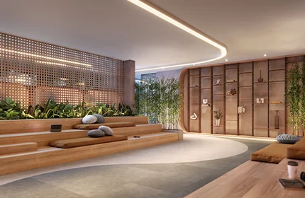

É importante trabalhar
com lealdade e ética”

José Luis Galvêas lidera a Galwan construindo como se fosse para si mesmo, com proximidade das equipes, adoção de design funcional e lealdade como regra de gestão.
José Luís Galvêas Loureiro, fundador e diretor-presidente da Galwan Construtora e Incorporadora, foi reconhecido mais uma vez na categoria Construção Civil Alto Padrão da pesquisa Líder Empresarial. Com quase 40 anos de história e a maior metragem de obras em execução entre as construtoras capixabas, a Galwan fez de 2025 um dos melhores anos de sua trajetória, medido pela velocidade de adesão nos lançamentos.
Para 2026, a empresa projeta repetir o desempenho, com novos lançamentos na Serra, em Guarapari e em Vitória, além de empreendimentos como o U.Connect Residence, em Vila Velha.

Pensar sobre excelência, me remete ao primeiro empreendimento que construímos. Quanto ensinamento eu tive naquela época! Cada empreendimento proporciona uma experiência para quem faz. Hoje, com mais de 100 torres construídas, eu posso dizer que esse caminho trouxe uma excelência, que é sinônimo de melhoria contínua.
A Galwan tem um histórico bem-sucedido, com muitos clientes participando de outros empreendimentos nossos. Isso atesta a nossa busca pela excelência. Mas nós a atingimos? Não, nós continuamos perseguindo essa excelência!
A Galwan nasceu com a filosofia de construir como se fosse para nós morarmos. A Galwan cresceu, hoje já não conheço mais todos os condôminos, mas a cultura de construir como se fosse para a gente morar é muito forte e permanece.
Outra coisa é a visão do empreendimento não como tijolo e parede, mas como vida e alegria. A gente não consegue fazer um prédio sem pensar no convívio das pessoas, das crianças. Por isso valorizamos tanto os espaços de lazer.
Os primeiros projetos da Galwan foram feitos pelo fundador. Eu sempre me preocupei com a funcionalidade, saber como os espaços são utilizados. Isso existe na Galwan até hoje. Temos um departamento de arquitetura dentro da construtora que faz um acompanhamento contínuo. Todos os arquitetos trabalham adequados à cultura da empresa.
Busco o trabalho em equipe, com respeito pela hierarquia, mas sem distanciamento. Como dizia Silvio Santos, somos todos “colegas de trabalho”. O exemplo que quero deixar é de proximidade com as pessoas. Gosto de ouvi-las, até para ser justo ao dar a palavra final. E gosto que todos se sintam à vontade comigo. Ninguém deve se colocar acima de ninguém.
Não aceito desrespeito. Estou sempre aberto a ouvir, por isso não aceito que uma decisão minha, depois de discutida, não seja seguida. Todos na Galwan têm muita liberdade e sou muito tolerante, mas o que foi discutido e definido precisa ser feito.
É importante trabalhar com lealdade e ética. A liderança na Galwan é bem descentralizada. Cada engenheiro, em cada obra, tem bastante liberdade de ação. Com essa liberdade, eles trazem ideias que podem ser levadas para outras obras. Fico feliz de ver como a filosofia da Galwan foi assimilada por todos.
Meu sócio e diretor de Obras, Sancler Viana, e o diretor financeiro, Felipe Loureiro, são dois jovens líderes que estão agregando muita coisa à Galwan. Eles exercem um papel diferente do meu, mas tem que ser diferente mesmo, porque a Galwan não precisa mais ser fundada. É uma empresa consolidada. Vejo os dois como excelentes líderes, muito bem preparados, éticos e leais à filosofia da empresa.
A liderança precisa ter sensibilidade para entender o talento de cada um. A gestão deve ser focada nas pessoas, elas precisam se sentir valorizadas. O desafio do líder é conduzir a empresa de forma que ela seja admirada por quem a conhece muito de perto e também por quem a conhece mais de longe.
O líder, na verdade, precisa ser leal. Jamais será um grande líder que não é leal com seus liderados.
58